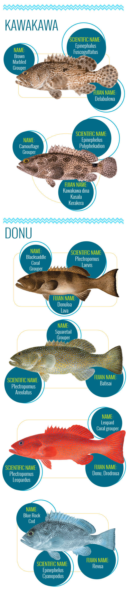
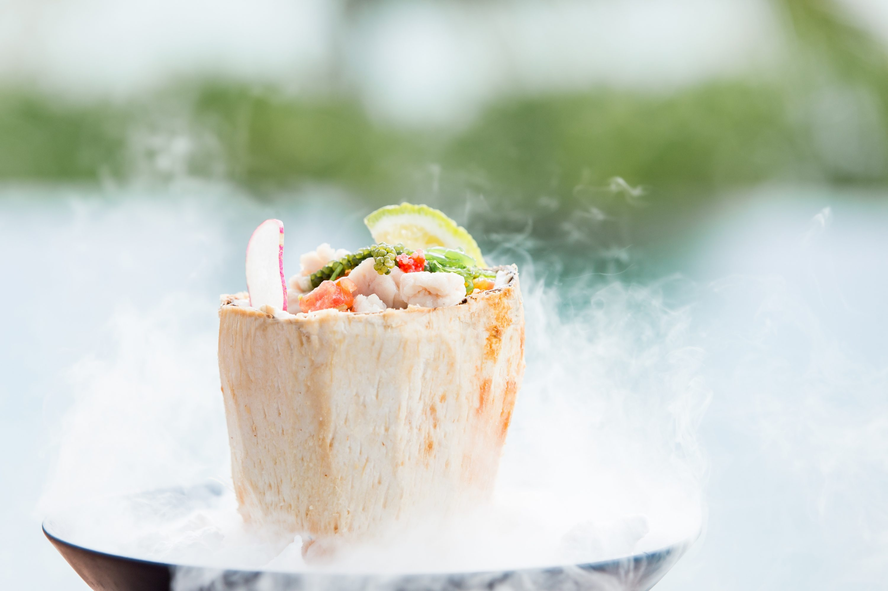

Fiji-based chefs take 4FJ pledge and lead by example
With any luck, if you are looking for a meal of prized fish species kawakawa and donu anytime between June and September in Fiji, your search will be unsuccessful. Part of the local gastronomy in the Pacific island nation for hundreds of years, demand for the two species is increasing faster than the fish can repopulate. With fish stocks rapidly decreasing in Fiji waters, the Government has been placed a ban on the two species during their spawning season following discussions at last year’s United Nations Ocean Conference in New York. Malamala Beach Club Executive Chef and advocate for the ban Chef Lance Seeto says he and his colleagues are in a sense, custodians of the species as they create demand through their dishes. For this reason, and many more, it is important chefs and those in the tourism and hospitality industry lead by example and support the ban…
Placing a seasonal ban on kawakawa (or grouper) and donu (coral trout) is simple logic to Executive Chef Lance Seeto from Malamala Beach Club, located in the Mamanuca Islands.
“It just makes sense for sustainability, dietary and cultural reasons,” Chef Lance says.
Not only are the fish highly prized to eat and have been a traditional part of the Fijian diet for millennia, kawakawa and donu are highly valued in cultural ceremony.
“Their use in cultural ceremony, presented to chiefs and dignitaries, is of paramount importance in protecting the iTaukei legacy,” he says.
“Can you imagine if we allowed these fish to die out? We’d be serving tinned tuna at iTaukei ceremonies.”
The seasonal ban started in June this year and finishes in September, months after the 4FJ Movement – against the fishing of grouper- was officially launched.
Traditionally, the spawning sites were well-known to local fishermen and provided good opportunities to fish them with minimal effort.
But in modern times, as fishing gear has improved and fishing pressure has increased, particularly for commercial sale, the unique spawning habits of these fish – gathering the same spot predictably each year – have made it easy to fish out large percentages of the population and leave too few to sustain the fishery.
According to 4FJ Fiji has seen a 70 percent decline in landings of Kawakawa or donu over the past 30 years; and of 22 spawning aggregation sites only nine percent were healthy while 73 percent were declining and 18 percent of the sites were dead.
The 4FJ campaign encourages people from all walks of life, from villages to fish markets to those in board rooms and government leaders to take a simple pledge: “I will not eat, buy or sell grouper from June through September.”
Although better managing food fish is a complex challenge, 4JF campaigners say fish reproduce predictably every year at the same time.
If people do not catch and eat the fish during this spawning time, they can release millions of eggs instead, and the fish populations will begin to rebound.
The goal of the pledge is to let these fish reproduce and fill fish baskets for years to come.
An original 4FJ champion, Chef Lance was advocating for the ban when the programme was initiated by Seaweb Asia Pacific, a communications not for profit, some time ago, he says.
Currently, Malamala Beach Club has a ban on kawakawa and donu in place, and will not purchase, sell or serve to guests or staff during the moratorium.
“Local fishermen have been told not to catch these species and will be reported to authorities if the ban is breached.”
Outside of the ban, Chef Lance would use the fish species in his dishes on a daily basis, he adds.
“Any other time, I would encourage all of my customers, especially international visitors, to try the wild Fijian caught species.
“They are incomparable to those caught in overseas countries as my father will attest – it is his favourite fish, and after a week of eating steamed donu with Fijian ginger and soy for his entire stay, he was sadly disappointed when he got home to Australia only to find the equivalent fish tasted very different.”
Originally from Australia, the professional Chef, travel writer and adventurer says after an eight year quest to find the secret ingredient to happiness, it found him, in Fiji.
“My culinary journey has captured the ancient gastronomy to not only bring back ideas for my restaurants, but to help its people to reconnect to their ancestral diet – one that was more nutritional, herbal and medicinal.”
Credited with igniting a cultural food revolution across Fiji, Chef Lance’s love of the country and its message of hope and happiness convinced him to become a dual citizen in 2016.
He wears many hats – he is the star of the South Pacific’s top rating adventure cooking show Taste of Paradise; he is Fiji Airways culinary ambassador; brand ambassador with the country’s Ministry of Industry and Trade Fiji Grown campaign; the Honorary Culinary Advisor to the Fiji Olympic team; and he also writes regular columns for various publications.
Chef Lance takes his role as a Chef and ambassador of agro-tourism and gastro-tourism in Fiji seriously, and he is hopeful other chefs do too.
“In many ways, chefs are the custodians of this species as we are the ones who create the demand through our dishes.
“We are more than happy to work with government and NGOs to protect kawakawa and donu if it means ensuring the survival of the species.
“Besides, we can serve these for the rest of the year.”
The ban has not impacted Malamala Beach Club at all, as it had planned to replace the fish with other species during the ban period, Chef Lance adds.
Chef Lance says he is a huge supporter of the Government’s Fiji Made/Fiji Grown campaign, and Malamala Beach Club survives solely on Fijian products.
“The entire menu is based on locally sourced produce including fruits, vegetables, red and white meats, herbs, spices and seafood,” Chef Lance says.

“Fiji’s farmers and boutique manufacturers have come a long way in past years and I can now source edible flowers, pearl meat, dragon fruit, durian and sustainable heart of palm thanks to innovative farmers.”
While there are no doubt supply and consistency issues, these can be managed and farmers can be educated to produce what the industry needs and is constantly looking for – exotic and pristine produce, Chef Lance adds.
At a recent United Nations, World Tourism Organisation (UNWTO) conference determined that gastro-tourism linked to agriculture is one of the growing sub sectors of the tourism industry globally.
International travellers have put this at the top of their list when visiting overseas destinations.
“They want to see, feel and taste locally grown and sourced foods – especially if there is a cultural element attached to that food (like kawakawa and donu),” Chef Lance says.
“Malamala Beach Club has demonstrated that local gastronomy is key to attracting tourists, both local and international.
“Gastro-tourism has enormous potential for Fiji’s tourism as we tick all the boxes related to agriculture, ancestral gastronomy and the uniqueness of our cultural mix.”
Unless action is not take to better manage kawakawa and donu, which help support Fiji’s villages, its culture and economy, these fish face a bleak future.
Major resort InterContinental Fiji at Natadola was the first resort to take the 4FJ pledge not to serve the fish during the ban, with the goal in mind to boost the species’ populations, as well as improving food security and income of communities across Fiji.
Area General Manager of InterContinental Fiji Golf Resort and Spa Erik Stuebe says the InterContinental’s participation in this campaign will encourage other resorts to join this cause, because as a sector, it has a tremendous opportunity to give back to the people of Fiji.
Scott Radway, Executive Director of the 4FJ campaign creators SeaWeb Asia Pacific says the InterContinental Fiji pledge is a major milestone for the campaign as it actively engages the business sector in Fiji.
“The tourism sector is built on the unique experience visitors receive from Fiji’s rich island culture, a culture that is deeply intertwined with healthy ocean resources,” Radway says.
“For one of Fiji’s premier resorts to step up and make this pledge shows a gratitude to the people of Fiji that should be commended and provides tremendous leadership and encouragement for other resorts to join the movement.”
InterContinental Fiji, which employs 550 people, has also partnered with 4FJ to provide its staff and visitors the opportunity to make their own personal 4FJ pledge.
As the campaign has gained momentum, fellow chefs have joined Chef Lance supporting the ban, including Executive Chef Darren Braddock at The Rhum-Ba and Denerau Yacht Club, a restaurant, bar and social club in Fiji’s Western Division.
An English import, Chef Darren has lived in Fiji since 2011, and he prides his food as always reflecting the quality of local produce.
Another to take the pledge is Executive Chef Anthony Healy at Kokomo Private Island, on Yaukuve Levu Island.
The Australian-born Chef, who has previously worked at Laucala Resort, uses home-grown produce from his organic kitchen garden at the luxury accommodation.
Jack’s of Fiji Restaurants – located nation-wide – are also part of the 4FJ movement, refusing to serve the kawakawa or donu on its menus.
It is also engaging their customers to be involved and support the movement.
Jack’s of Fiji Restaurants Chief Executive Eugene Gomes says as a local business, it is dedicated to helping improve the well-being of Fijian communities as part of its corporate social responsibility programme.
Chef Gomes says he wants to be able to see both Fijians and visitors continue to be able to enjoy these Grade-A fish.
“Fish is such a wonderfully versatile, nutritious food and with so many exciting varieties available to us,” he says. .
“It’s vital that we encourage people to try lesser known species and raise awareness of the importance of safeguarding marine resources to ensure a sustainable future for our fish and seafood.”
These professionals believe in using local products where possible and in doing whatever they can to support sustainability – so future generations can experience the same products we are now currently consuming.
More than 15,000 people have taken the 4FJ pledge to date.
Other notable champions for the campaign include rugby legend Waisale Serevi, Ratu Filimoni Ralogaivau, Hindi broadcaster Veena Bhatnagar and fisherman Lisala Waqalala.
More recently the campaign received the backing of the Methodist Church in Fiji, the largest religious institution in the country, and the Fiji Ministry of Defence, which says its pledge was a matter of national security as many communities throughout Fiji depending on fish for protein.
Organisers for 4FJ say taking the pledge is not just about saving the fish, but about the people of Fiji.
They want to know why saving these fish is important to those who take the pledge, and what it means to their family, village, island, and country.
Here is how you can join the movement:
- Tell your FJ story: Add your voice to the movement;
- Spread the word: Once you have brushed up on the issue, talk to family, friends, and colleagues about taking the pledge and joining the movement;
- Support 4FJ businesses: As part of the 4FJ campaign, chefs at hotels and restaurants in Fiji are taking the pledge, too. Once they do, reward them by giving them business;
- Volunteer: Get involved with the 4FJ organisation;
- Donate/sponsor events: Sponsor events, marketing campaigns, community outreach, or just give what you can;
- Learn more: Visit 4FJ’s educational resources or visit their office to receive additional materials.
“Let them breed. Eat more later.” 4FJ Movement.
Visit https://4fjmovement.org for more information.